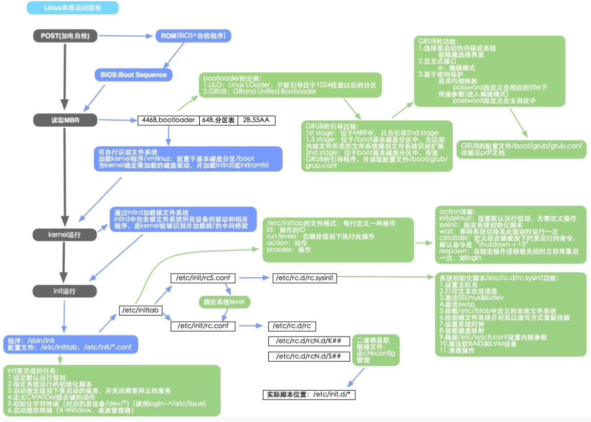
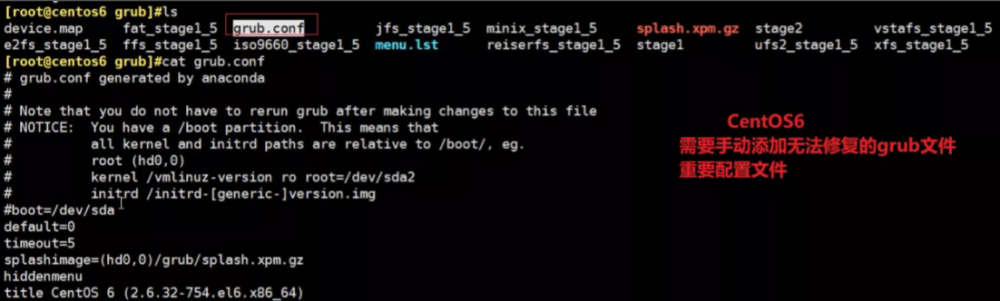
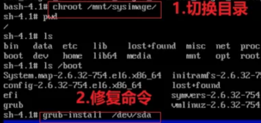
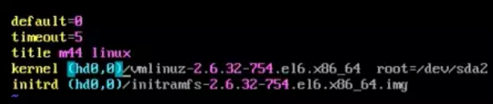
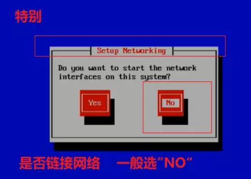
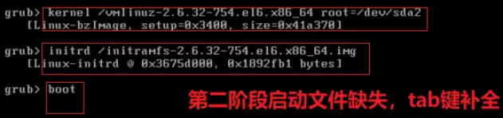

Linu系统启动和内核管理
🥼16.4 Linux 系统启动和内核管理
🔑Linux启动整个流程：
如图所示：

- 硬件启动
- 打开电源
- Bios
- MBR
- grup引导启动
- Stage1阶段
- Srage1.5阶段
- Stage2阶段
- 内核引导启动
- 系统初始化
- /etc/inittab
- /etc/rc.sysinit
- 加载系统服务
- 启动终端
- 默认启动/sbin/mingetty
- 验证登录
- 登录成功
- 如果级别为“5”，打开X-window
简单理解Linux整个启动流程便是：POST加电自检——MBR引导——GRUB——加载内核
🎾what is “grub”？
简答理解grub = 硬件启动OS（操作系统）的中介。
但是当我们出现误删”grub”文件会出现什么样的结果？显然，我们的Linux将会无法正常启动。
how 修复”grub”文件？
在CentOS中，我们在修复grub文件的时候，需要特别注意的是：需要自动添加grub的配置文件，因为在系统恢复当中没有恢复这一环，而需要我们使用者手动进行文件的配置添加，如下图所示：

安装grub的两种方法：
方法一：
1 | |
方法二：
1 | |
进入救援模式：（开机0.5秒内安装Esc键）
1 | |

vim /boot/grub/grub.conf

第二阶段grub补救方法
在上述对grub简介当中，grub在Linux引导系统启动状态大致可分为三个阶段，当grub处于第一个阶段顺利完成进行，但是第二个引导阶段文件丢失我们该如何修复？
在进入上述的救援模式情况下，当进入如下界面时：

适用于文件被意外移除等情况
e————对配置文件再次进行修改

📱Linux内核修复
how 修复内核？
1 | |
why 内核”s””k”两个文件代表的含义？
1 | |
how Linux如何运用Windows的磁盘分区？
1 | |
🧨how 破解root密码
基于centos 6，适用于忘记密码的情况下，进入救援模式，具体操作如下：
1 | |
如何加密？
1 | |
本博客所有文章除特别声明外，均采用 CC BY-SA 4.0 协议 ，转载请注明出处！